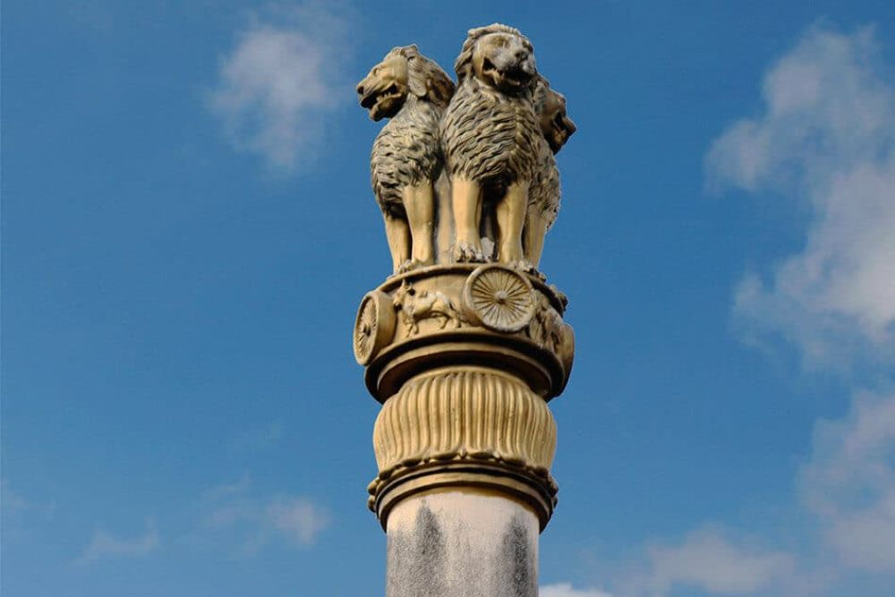
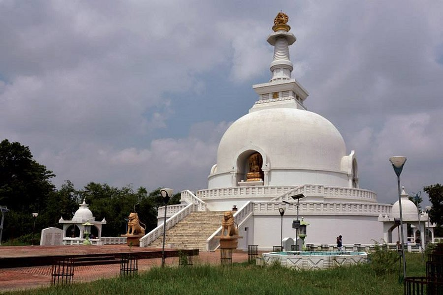

Explore Vaishali
Why Visit Vaishali?
Vaishali is one of the earliest republics in the world and a sacred land associated with both Lord Mahavira (Jainism) and Lord Buddha (Buddhism). With historic stupas, Ashokan Pillar, and relics, it’s a spiritual and archaeological gem.
Best Time to Visit
October to March: Cool, pleasant weather. Ideal for exploring Buddhist and Jain heritage sites and attending local festivals.
Top Places to Visit in Vaishali
- Ashokan Pillar: Marks Buddha’s last sermon site.
- Buddha Stupa I & II: Contain Buddha’s relics.
- Vishwa Shanti Stupa: A symbol of world peace.
- Abhishek Pushkarni: Sacred coronation tank.
- Vaishali Museum: Ancient artifacts from excavations.
Local Homestays & Lodges
- Buddha Residency: A peaceful guest house.
- Vaishali Guest House: Budget stay near monuments.
- Patliputra Homestay: Nearby in Patna, well-connected.
- View more stays on Google
How to Reach Vaishali
- By Air: Nearest airport is Patna (70 km).
- By Train: Hajipur is the nearest railway station.
- By Road: NH-77 connects it to Patna and Muzaffarpur. Book Train Tickets
Explore Vaishali on Map
Gallery
Vaishali's Heritage
Vaishali – Land of Peace, Politics & Pilgrimage.

